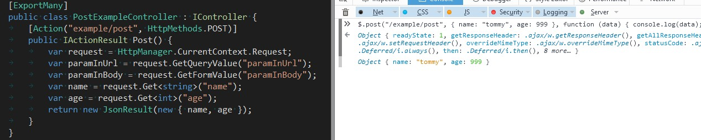

控制器
ZKWeb使用了独自编写的控制器和模板系统，不依赖于Asp.Net Webform和Mvc。
ZKWeb提供了对Http的抽象封装，不依赖于Asp.Net和Asp.Net Core。
获取当前Http上下文应该使用HttpManager.CurrentContext。
和Asp.Net Mvc控制器的区别
ZKWeb的控制器不拥有状态，不像Mvc的控制器会带当前Http上下文和路由信息。
ZKweb的控制器不决定路径，路径需要通过各个函数的Action属性指定，Action属性可以指定完整的Url。
ZKWeb的Action函数不带参数，获取传入的表单参数等时需要通过HttpManager.CurrentContext。
控制器的示例
Action函数可以返回IActionResult或string。
Action属性需要指定完整的Url，Url前如果没有"/"会自动补上。
[ExportMany]属性在IoC容器提到过，用于注册组件到全局的容器。
[ExportMany]
public class ExampleController : IController {
[Action("example/plain_text")]
public IActionResult PlainText() {
return new PlainResult("some plain text");
}
[Action("example/plain_string")]
public string PlainString() {
return "some plain string";
}
[Action("example/template")]
public IActionResult Template() {
return new TemplateResult("zkweb.examples/hello.html", new { text = "World" });
}
[Action("example/file")]
public IActionResult File() {
return new FileResult("D:\\1.txt");
}
}

提供的返回类型
ZKWeb提供了以下的返回类型，
如果需要返回其他类型的结果，可以自己编写继承IActionResult的类。
- 返回文件
FileResult(string path, DateTime? ifModifiedSince = null)
- 返回图片
ImageResult(Image image, ImageFormat format = null)
- 返回Json序列化的结果
JsonResult(object obj, Formatting formatting = Formatting.None)
- 返回纯文本
PlainResult(object obj)
- 重定向到指定地址
RedirectResult(string url, bool permanent = false)
- 返回数据流
StreamResult(Stream stream, string contentType = null)
- 返回模板
TemplateResult(string path, object argument = null)
获取传入参数
获取传入参数需要通过HttpManager.CurrentContext。
推荐使用扩展函数Get<T>来获取参数。
想知道如何在测试时模拟这里的参数，请参考单元测试。
[ExportMany]
public class PostExampleController : IController {
[Action("example/post", HttpMethods.POST)]
public IActionResult Post() {
var request = HttpManager.CurrentContext.Request;
var paramInUrl = request.GetQueryValue("paramInUrl");
var paramInBody = request.GetFormValue("paramInBody");
var name = request.Get<string>("name");
var age = request.Get<int>("age");
return new JsonResult(new { name, age });
}
}

重载Action
ZKWeb支持替换现有的Action，例如添加一个插件把原有的页面处理全部重写。
替换Action时需要指定Action属性的OverrideExists参数。
替换Action的插件加载顺序需要在原插件的后面（且不能是同一个插件）。
[Action("/", OverrideExists = true)]
public IActionResult CustomIndexPage() {
return new PlainResult("hello overridden action");
}